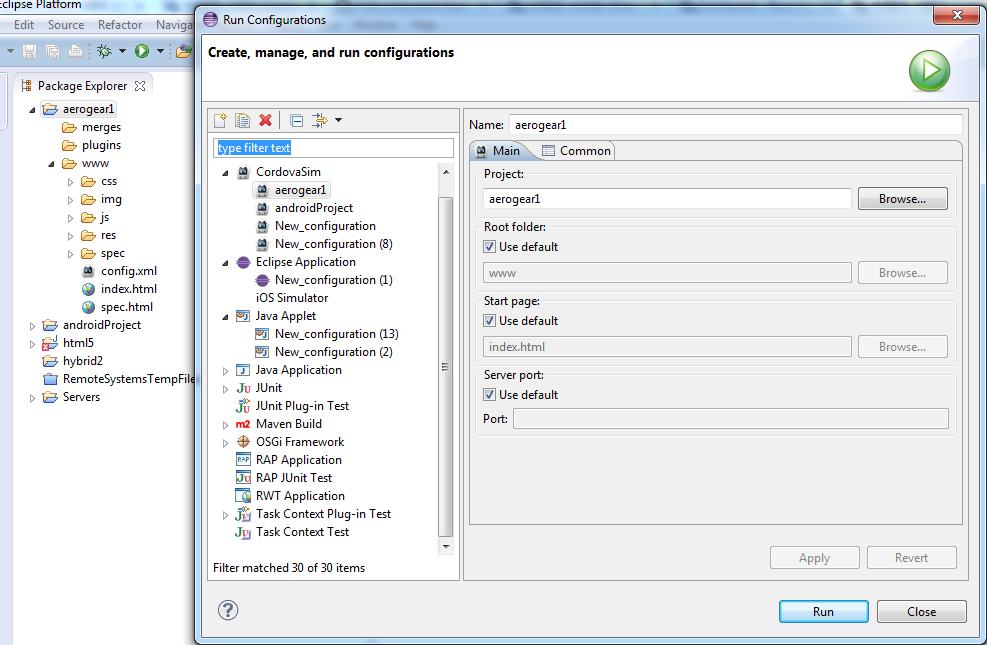
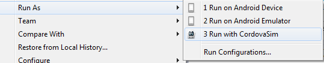
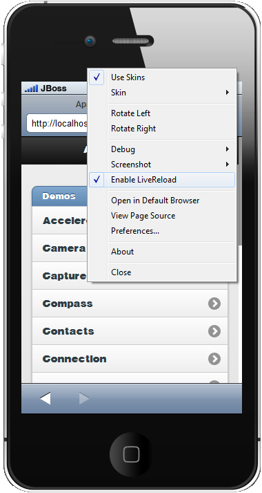
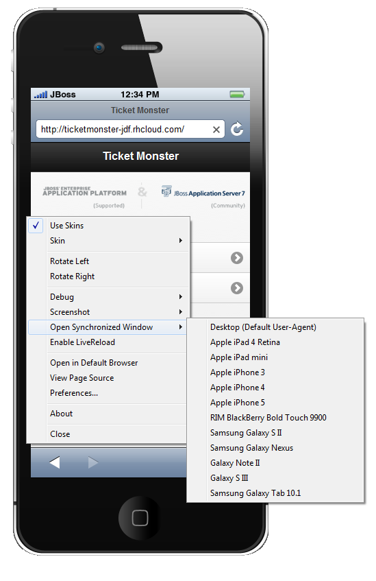
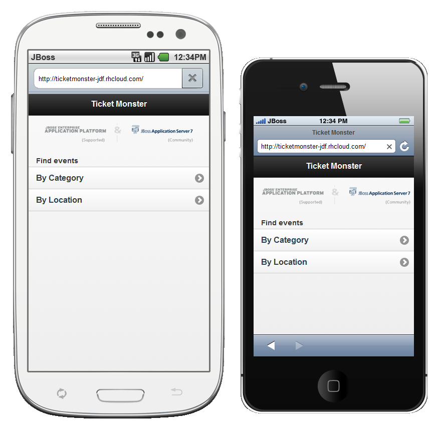

CordovaSim
New CordovaSim Application
CordovaSim is a simulator of Apache Cordova (aka PhoneGap) environment based on BrowserSim and Ripple. It emulates main APIs of Apache Cordova such as Accelerometer, Geolocation, Camera, Barcode Scanner, etc.

There is CordovaSim Launch configuration which can run Hybrid Mobile projects and Cordova enabled Android projects.

The Launch Configuration is also available from the Run As context menu.

Related JIRAs: JBIDE-13552, JBIDE-14362, JBIDE-14300, JBIDE-14383.
BrowserSim
LiveReload support
If you enable LiveReload BrowserSim will inject livereload.js into html pages it load. Making it automatically load if the url is managed by a livereload server such as JBoss Tools new LiveReload plugin.

Related JIRA: JBIDE-14360.
Synchonized Windows
Now you can open more than one BrowserSim windows which work synchronously. It provides ability to see multiple devices rendering the same page, repeat your navigation steps and when reload it reloads all of them. Synchronized window can be opened via Menu > Open Synchronized Window > skin_to_open

As a result of this action two devices working synchronously will appear.

Related JIRA:JBIDE-13525.